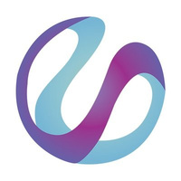
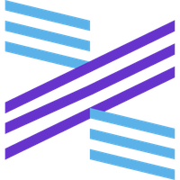

 UniCoin(UNC) UniGame，区块链体育竞猜平台将体育竞猜领域引入区块链技术，利用区块链的公开账本特性，旨在打造一个数据透明的体育竞猜平台，让所有竞猜玩家可以享受娱乐+竞技的乐趣，在一个公...
USDK USDK是基于区块链和信托牌照的稳定币，是由OKLink和Prime Trust联合推出的ERC-20数字资产，在以太坊区块链上运营，以1美元发行及赎回，并以Prime Trust所持有的资产按11基准提供担保
ValueCyber(VCT) ValueCyber是面向数字经济时代的生产和流通所需的协作而设计的区块链系统，也是一个尝试实现下一代区块链的技术和开放性需求的区块链，最终目标是实现一个为现代以及未来的社会经...
VAS Chain(VAS) VAS Chain意为价值存托自治公链（ Value Asset Depository Service Chain），首先它支持一切有价值的数字资产和实物资产的存托服务，实际资产存托上链，需要经过超级节点或代理节...
拓扑链-TopChainCoin(TOPC) 拓扑链（Topchain）是区块链游戏全球领军品牌，以去中心化理念重塑游戏行业体系结构，通过拓扑链玩家社区、拓扑共识、拓扑挖矿三大共识方案解决当前游戏行业巨头垄断、渠道积弊，...
 XMAX(XMX) XMX 目前转型为全网首个算力币，独具全网算力优势，通过共享运算设备与技术，为普通用户提供低门槛的数字资产原始积累和高效率的数字资产选择配置；也是全网第一个基于自治社区构建的公正、透明、多赢、不可篡改的全新算力生态。
Zero(ZER)是ZEC零币的改良版，从2017年2月份一上线就采用了自己独立算法运行，结合了pow和pos混合证明机制。对于zec所存在的有两个问题：1：过于中心化，zec开发基金抽成20%过高； 2：客户端难用，特别是没有手机匿名发送app,无法发挥匿名币的本质。Zer是无预挖，无ico,纯社区驱动。目前可以匿名挖矿，用独有的审计系统匿名对接交易所，手机端匿名发送也开发成功，不久之后便会推出。致力于打造一个从头到尾全匿名性、跨平台、即时到账、转帐费用为零的匿名币。
信用链-BuildYourTrust(BYT) BYT（BuildYourTrust，信用链）是一个基于POC价值网络的分布式信用生态，依托高性能POC公有链、跨链融合信用系统、多链共生共享底层共识、模块化业务架构及POC生态新一代经济体系，为现实世界及虚拟空间中存在的各类产业提供广泛化信用解决方案，BYT（信用链）将在未来通过金融、国际贸易、商品流通等领域广泛应用，结合BYT全新的商业模式打造POC共识金融生态信用链。
天空币-Skycoin(SKY) 天空币是下一代分布式加密数字货币，天空币起始于莱特币发行前后（2010年前后），是比特币的后继者和替代者，旨在安全性、易用性、便捷性上对比特币各项特性进行针对性的提升，弥...
希望币-Hope(HOPE) HOPE是一种新兴数字货币，以区块链为底层技术的去中心化虚拟加密货币。HOPE采用多种加密算法，融合了高一致性的RAFT以及高并发的BPFT。HOPE拥有更快更安全的交易速度，同时解决了安全性、高性能以及信任问题，HOPE填补传统数字货币在商业等多个领域的短板。
幸运链-LuckChain(BASH) 幸运链是全球首款基于BTC协议开发的去中心化市场预测平台，你可以在幸运链预测任何事件（足球，世界杯，竞选等）的结果，我们通过区块链验证结果，没有人可以作弊。幸运链节点队列QPoS算法是全新的区块链股权证明共识协议，是幸运链团队在微币PoS 3.0协议基础上发展的一套全新的节点排队采矿共识算法，这一协议目前已通过初步测试，我们正在为该原创协议申请专利。
新星币-Novacoin(NVC) 新星币(NovaCoin,NVC)2013年2月11日发布于俄罗斯，混合scryptProof-of-Work+Proof-of-Stake算法的去中心化的点对点网络货币，由CPU和GPU开采，出块时间：2.5分钟，每块最高100个币。提供5%年利息，总量20亿个。
新经币-NEM(XEM) NEM区块链项目创始于2015年，是一个数字资产管理平台，能够根据需求创建，金融科技系统，物流跟踪系统，首次代币发行，公证，去中心化身份验证等。由于该系统自主地是开放的，去中心化的，自我支持的NEM公有区块链，不仅任何人完全自主地使用NEM区块链，而且开发者们也能在NEM上进行构建。新经币（XEM）是NEM网络的原生代币，可在世界任何地方进行即时付款和转账。XEM也可用于支付转账手续费、代币的创建，加密信息或者其他一些特性。
新能源科技链-NSS(NSS) NSS（New energy science and technology chain，新能源科技链）是基于新能源科技领域，以独有的区块链｛BlockChian｝去中心化技术所呈现的分布式数据库识别，传播和记载信息的智能化对等网络和去中心化的对等网络，用开源软件把密码学原理、时序数据和共识机制相结合，来保障分布式数据库中各节点的连贯和持续，使信息能即时验证、可追溯、但难以篡改和无法屏蔽、从而创造了一套隐私、高效、安全的共享价值体系的特点。
新诺科-Sinoc(SINOC) SINOC（Storage Internet Nova Optimum Chain，新诺科）是面向于分佈式存储和私有云存储技术打造的存储与游戏产业的公有区块链系统，其核心技术是基于智能合约区块链技术和分佈式存储系统以及Poc容量证明共识，来打造的去中心化的数据存储空间和Dapp应用结算的公有区块链产品。


2013年2月11日发布于俄罗斯，混合scryptProof-of-Work+Proof-of-Stake算法的去中心化的点对点网络货币，由CPU和GPU开采，出块时间：2.5分钟，每块最高100个币。提供5%年利息，总量20亿个。")